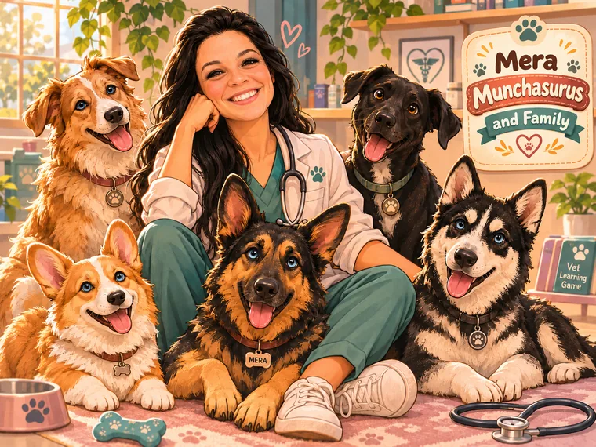

🐕
•ᴗ•
✚
Move near a station to interact
🎓 Practice simulator only. Medicine, product labels, antimicrobial stewardship and reporting rules need case-specific verification. Wrong answers are learning opportunities—not patient care instructions.
A safe and fun place to learn, grow, and build clinical skills connected to our studies.
Pharmacology · Toxicology (expanding) · One Health · Patient Rounds · More departments in development
Mera Munchasurus and FamilyHospital Mascots · Chiefs of Snacks & Encouragement